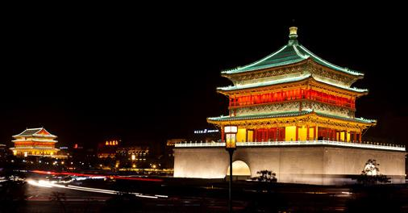

大雁塔
大雁塔是西安市著名的旅游景点。唐代永徽三年（公元652年），玄奘为藏经典而修建，塔身七层，通高64.5米。被视为古都西安的象征。2011年1月17日，西安大雁塔—大唐芙蓉园景区正式获批为国家5A级旅游景区。
大雁塔又名大慈恩寺塔，位于中国陕西省西安市南郊大慈恩寺内。因坐落在慈恩寺西院内，大雁塔原称慈恩寺西院浮屠（浮屠即塔的意思）。是中国唐朝佛教建筑艺术杰作。
大雁塔是楼阁式砖塔，塔通高64.5米，塔身为大雁塔塔身照(13张)七层，塔体呈方形锥体，由仿木结构形成开间，由下而上按比例递减。塔内有木梯可盘登而上。每层的四面各有一个拱券门洞，可以凭栏远眺。整个建筑气魄宏大，造型简洁稳重，比例协调适度，格调庄严古朴，是保存比较完好的楼阁式塔。在塔内可俯视西安古城。
大雁塔是西安市的标志性建筑和著名古迹，是古城西安的象征。因此，西安市徽中央所绘制的便是这座著名古塔。
唐代诗人岑参曾在诗中赞道：“塔势如涌出，孤高耸天宫。登临出世界，磴道盤虚空。突兀压神州，峥嵘如鬼工。四角碍白日，七层摩苍穹。”大雁塔的恢宏气势由此可见。